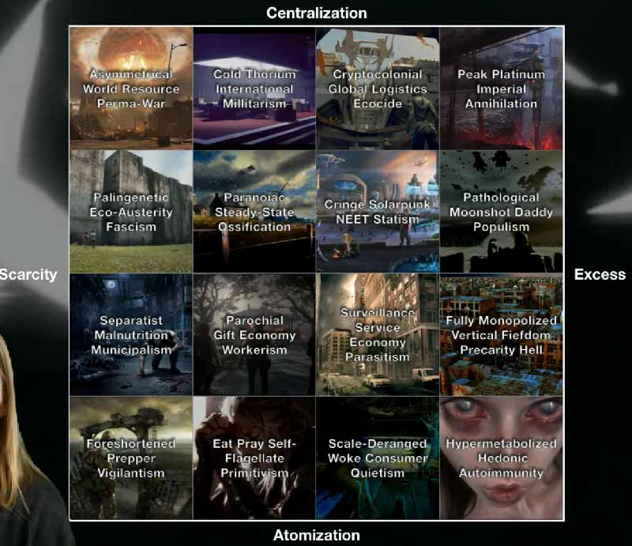
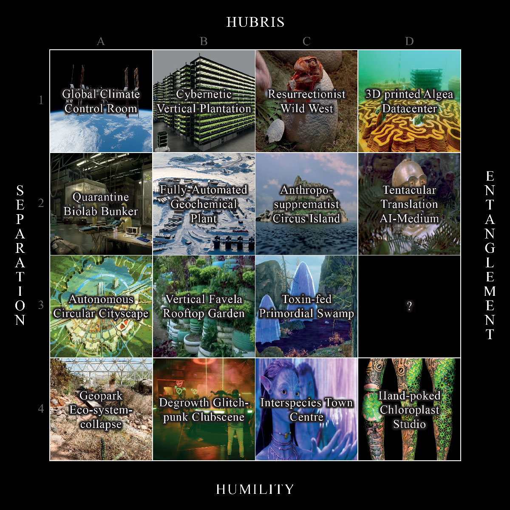
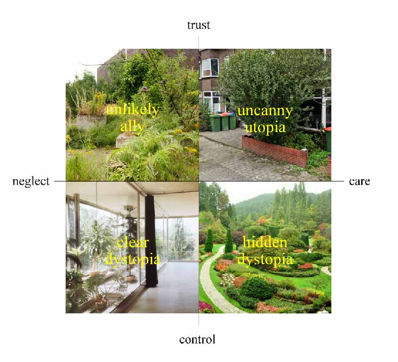
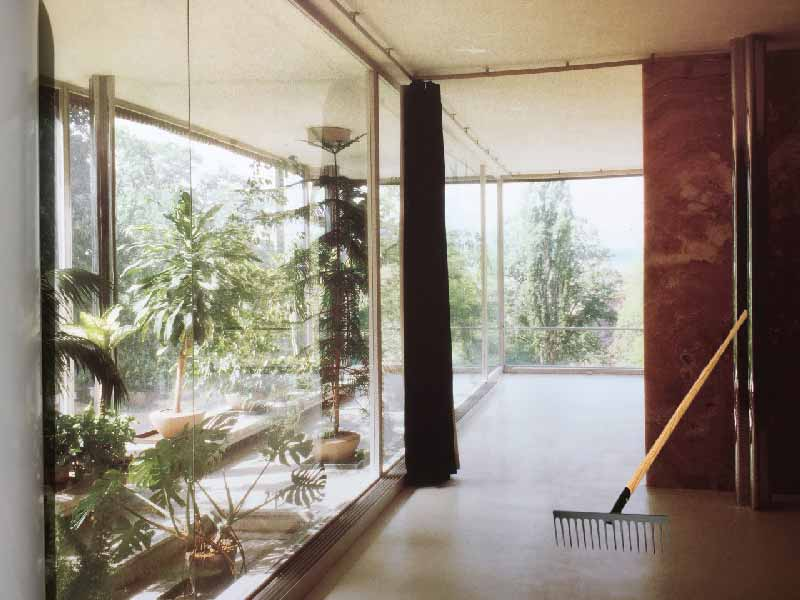
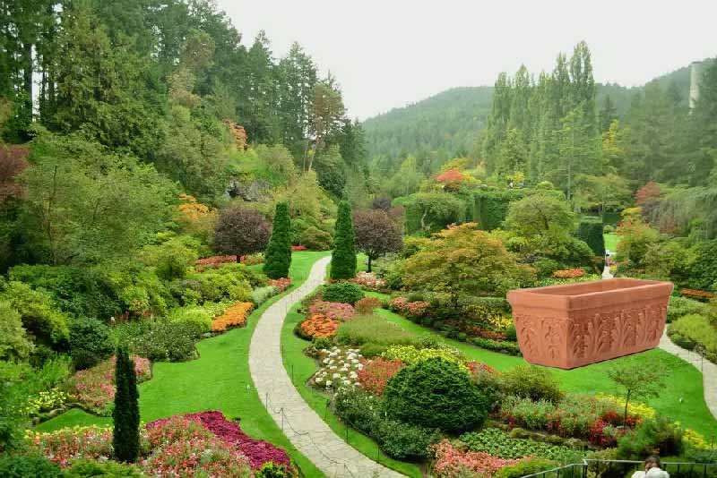
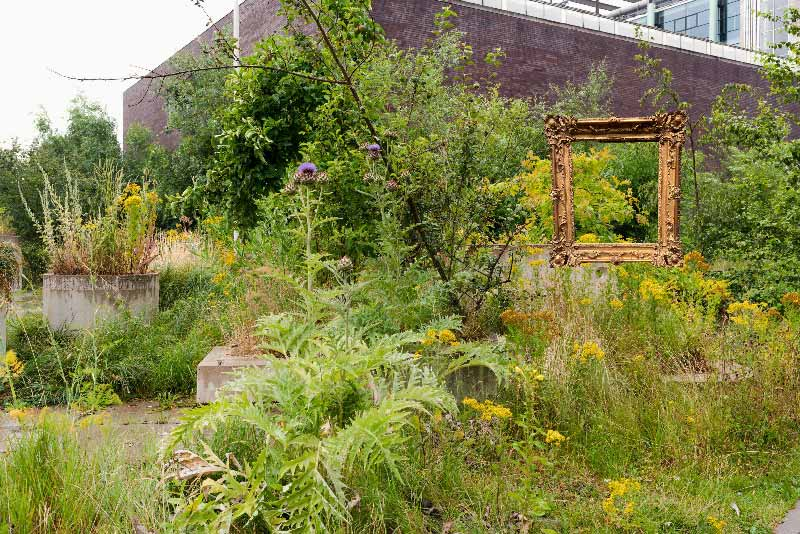
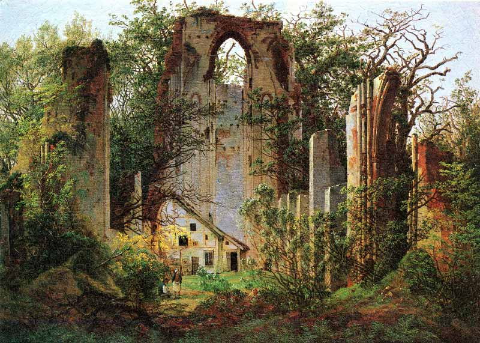
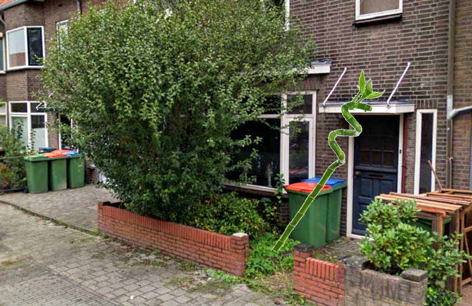
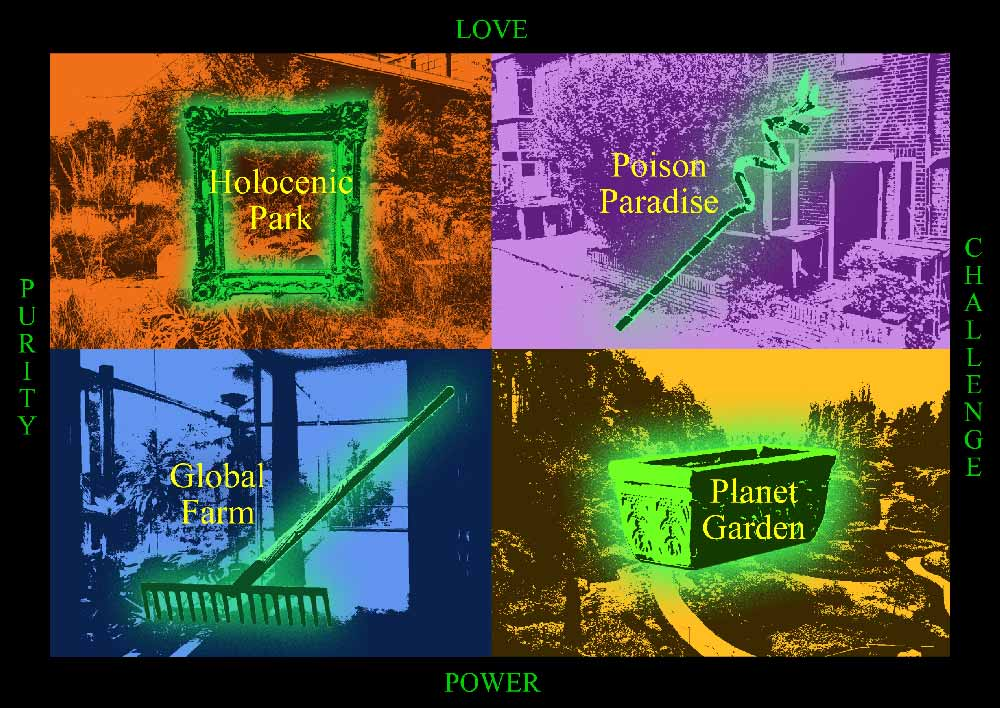

family: garden plans
Zen Grip
I admire the care necessary to create a bonsai, but the aesthetic bothers me in its unbothering, uptight cleanliness.
It's not because I wouldn't want to sit in that patch of grass over there. I do want to lay down, spread my arms and oh watch out I don't disturb the raked gravel waves. But I don't want to let myself indulge. The seduction feels escapist, and ultimately, lonely.
Precision is intense engagement plus strong grip. There is listening – paths responding to rocks – but any green is kept neat within the lines.


family: garden plans
Victory
In a Victorian garden, design has won and everything blooms.
There is an honesty to the artificiality, and a vulnerability to the idealised expression of hills and flowerfields. At least I feel some resonance with the romantic painting.
The blooming is a feat, a brushstroke that keeps on asking. A tableau vivant that is codependent on the flowers growing. But where they grow and from where they are watched is set with a subtle fence.

family: garden plans
Looking for Nature
In this Dutch labyrinth it's harder to find wilderness than the exit.
Plants have a functional role here, and care is reduced to maintaining a homogenous hedge that you can't see through.
Control is key. The disorientation only works when there are no contingencies to discover.


family: garden plans
Garden as Set
In the Eden of the Teletubbies, nature is a set, a virtual background for soft drama to play out.
The hilled fields need to be as spotless as a greenscreen, or they would foreground themselves, breaking the illusion that the set is not real.
The grass is controlled to the extent that it could have been fake, so far away the smells and dirt. Televised, literally 'seen from afar'.

family: garden plans
Garden as Field
No lawn greener than a golf course in the desert.
There are allusions to landscape: hills, sand dunes, patches of trees. But there's no illusion made.
The grass is a sports pitch, a rolled out augmented reality mat for games and anonymous meetings.


family: garden plans
Growing Carpet
Persian carpets mirror garden plans, but mostly as a map or a screenshot. Within the actual garden, the lines drawn are just the stage on which blooming can happen.
There's a combination between functionality with irrigation channels, and symmetry, a kind of technical aesthetics. Landscape seems far away.
The edges are more rough than the Victorian garden, fat brick marked fields of slight (if often homogenous) chaos.

(painting: David Hockney)
family: garden plans
Personal Jungle
There is the fantasy of creating the jungle. Of building an arrangement of plants wild enough to create a sense of surprise.
I think it's close to my ideal garden. Of course its planted at first, but it only fully gets there when it grows beyond the plan.
It may look effortless but my first concern would be keeping the plants alive. I realise that I presume that it would exist in the Netherlands. If so, it could only ever exist as a well-tended vignette.
But let me choose to imagine it in Sicily. Less control, less care?

family: garden plans
Garden as Carpet
Some Wise Man might have said, if you want to assert your will over the world, first clean your lawn.
A blank slate, but also a place to host. BBQ, badminton, somersaults, a private camping, an outdoor green-carpetted room.
It sucks water and spits sprouts, turns yellow and melts into mud. A flat-laid weather report. It's just that when work is done, laying down, bare feet through the leaves, that distance dissolves.


(thumbnail: Helen Allingham)
family: garden plans
Garden as Return
The small gardens around Medieval English cottages functioned first to feed the appetite of their caretakers. Later they fulfilled the romantic aesthetic longing of a return to nature. They became an #aesthetic.
Opposed to the imposed 'carpet bedding' order of Victorian gardens, cottage style offered informality and density. It's Romantic and Arts & Crafts – just like cottagecore.
Cottage gardens capture a design paradox. How to make something wild? Natural even? Mixing plants helps give a 'casual' feel.
One famous follower of the trend was Claude Monet with his Giverny garden, and that's how it turned back into art.


family: garden plans
Garden as Film
Through the Moon Gate, a Borrowed View, a pond with Mandarin Ducks and a Scholar Stone. Things are named, which suggests things are placed.
The Chinese garden felt chaotic to westeners. There is no overview, you only see parts at a time. Still these views are carefully crafted.
The kind of craft is specific though. It's not so much based on creation, but more on curation. Using found 'scholar' stones, borrowing views from outside the garden, embedding seasonal fragrants into the design and names of pavilions.


family: garden plans
Garden as Vacant Lot
Construction sites often turn into unintended scenes of urban rewilding. In between concrete slabs and drainage pipes, a blossoming bouquet of plants usually considered weeds.
This was the model and aesthetic for The New Garden of the Nieuwe Instituut in Rotterdam. As far as design goes, Hans Engelbrecht and Frank Bruggeman introduced some building materials and sand heaps in 2015, and plants did the rest.
In a few years, the garden was filled with a wild range of plants. So wild it invited illicit encounters between those who dwell well when hidden from sight. Reason enough for the municipality to start weeding out.

family: garden plans
Garden as Jungle
Local subtropical species in wild beds with original Florida sand. This is getting close to the Hockney painting. An original personal paradise by Raymond Jungles.
Perhaps to increase the perception of wilderness by contrast, Raymond introduced some concrete monoliths. They work for me. Especially with that soft crisp sand.
The Casa Morada is a luxury hotel. Perhaps it says something about the personal jungle dream. It's not very affordable to have a worry-free jungle experience. The best service remains invisible.

family: garden plans
Garden as Mushroom
When the Planergruppe designed the landscape of a derrilict old coal mine, they must have already found a landscape of post-industrial plants.
Zollverein was once Europe largest coal mine. Like other sites at the end of the industrial world, things grow. The Planergruppe tried to keep much of that, but added paths for humans to re-enter.
There's something about the geometric paths following the old train tracks that I like. Honest, literally juxtaposing wildflowers and pedestrians. I just don't know if all insects can cross the conrete slabs.

family: garden plans
Nursing Home
Long lives in faraway places, stories for days. Sometimes you can make out a big circular scar in the grass that reveals the trees only landed recently and are still rooting.
Shekvetili Dendrological Park realises a millionaire's dream of a zoo of elderly trees. Floated in from all around the world to this final resting spot.
The mode of care invited exists in the register of wonder, and in the template of the hero's journey. As if it doesn't take a village to raise one, keep one alive, and be its object of protection. Will the hometown hero ever return?
family: Icons
Hand pot
Holding a plant in transit in between two places where it can live or on its way to the bin.
The engagement is strong, skin to soil, wood to flesh even, but so is the hierarchy. The livelihood of the plant resting on the palm of your hand.
I just feel a slice of doubt when looking at the wrist, which makes the hand look less like something that controls than something cut off.
family: Icons
Planet catching
Not sure if these hands actually hold or cherish or are just not sure why?
There is the involvement of a parent letting their kid balance. No touch but full attention.
Quite trustful, if it wasn't for the implication in the scaling that a pair of human hands could carry the earth if it would tip out of balance. Assuming a parental role admits some hubris.
family: Icons
Soil slipping
Fingers squeezed together, don't let this one slip!
There's care in the carefulness required for this manouvre, also manifest in the commitment of assigning both hands to the task of carrying the plant.
While this compromises human agency somewhat, the plant is still fully dependent on the human performing their care role well.
Plus, involvement with the soil may not translate in engagement with the plant, it may even distract.
family: Icons
The Wonder of the wind
Look how it moves!
Is wonder a mode of engagement? Perhaps but it may be a bit consumptive. Like letting a site of Wilderness blow fresh life in your face. Still, it is appreciative.
The hands seem soft. No intention of crushing, plucking or otherwise hurting the plant. They respond.
family: Icons
Globe Squeeze
The hands form a bowl wrapping the globe just over half from below. As they find it cute.
A planet represented by its meridians is like a body represented by its weight. Perhaps the meridians are more a representation of the system of measurement itself. The care less for the planet, and more for the systems to manage it.
In any case, plants are far away, both from the relation and from power.
family: Icons
Why, or, whatever
There is the moment of departure, and the moment of reckoning. You let it fly away, and now what?
The planet seems far away to me, it could be a tourist doing a Tower of Pisa pose on the Moon.
But I prefer a parental reading. The hands, still warm, left held up in wonder, to see the planet fly on its own. Why did it have to leave now? Or, whatever, it's too late now. The World is free and so be it.
Maybe this is when stepping back is the most caring.
family: Icons
Just whatever
There is the glaring absense of plants, but also of hubris.
I always feel that the nihilist retreat is cowardice at best, and self-evasive at worst. But I'm a nerd.
What is cool about the cool is the generousity in the space it makes. Space to be unbothered, free in the American dream and the land of any origin story. The generousity of the challenge to figure it out, to play.
What's a cool caring? #dadquestions
family: Icons
Planet pot
It seems to capture some sort of dream. Of earth as a nutritious pure and rich ball of wet soil that can ground and nurture a seed into a tree. Air must be jealous, that ever-present thing we can't see.
So, while nature is presented, it feels distant, represented as a self-sustaining system best left on its own.
There's a trust in that, sure, but it feels like we're off the hook a little too easily, under the guise of being very concerned with the matter.
family: Icons
Energy
A seemingly solemn flower or sun, doing its own thing. I'm reading into it an energy journey from sun to leaf to fossil, but only because I know BP.
Naturalisation, not just as attaching images used to depict nature (which it does), but ask making a practice seem normal, or natural.
There's a trust in the hope that natural equates good. But still, there's no flower this geometric. And apart from that no humans in sight.
family: Icons
Winter
There's the idea of a lone tree. They happen, they haven't got many others to talk through on mycelium internet, so often it's just stage one of a forest.
In this logo it's conifer is centered also as a symbol, of course, in the middle of a dial, as framed by crosshairs or a round window.
The circle is not just isolating though, it also feels caring in a way, held safe in a snow globe. But mostly isolating and strictly kept triangular.
family: Icons
Hug
I shouldn't get too biased by the sympathy of the company. Sure this looks like a warm hug by a fiery fox. But both fox and earth are not carethings here.
First, I shouldn't identify myself with the fox. Sure the fox would guide me through the World Wide Web, but it's not me. Apart from hugging it's also just territorially fencing off its play ball (way to small for an earth really).
Second, even if there is some warm fox-earth interaction here but we're outside observers. On the moon perhaps.
family: Icons
Racing
A kind of wavy halftone stripe style that was quite popular in corporate tech in the eighties (?), forming a globe.
Stripes suggest speed. The toning now mostly suggest a lighter and darker side of the ball. Is it even an earth? A perfect sphere, spinning.
For some reason we are looking down on the ball, at least in relation to the spin of its stripes. This is the Blue Marble perspective.
family: Icons
Flat in the grass
Wheat belongs to the family of grasses, which only really took off after the dinosaurs, to become the primary source of nutrition for humankind.
There's some humility in the earth being held or held together by an acknowledgement of these plants.
The particular projection from the north pole has the effect of enlarging the Global South, which is a bit emancipatory, even when projected as margin on a strict maritime compass grid.
family: Icons
Rain
I used to be quite confused about the color of clouds as a kid, because we used to draw them in blue. Then I learned they are white, but then they are sometimes still blue-ish.
Anyways, the cloud-service logos often commit similar aesthetic crimes, just projecting clouds as blue.
Mostly, they reduced the cloud shape to a collection of perfect circles in golden ratios. Is it light or heavy?
family: Icons
Sweet
Canada's national symbol was based on vegetation, one of the most common plants found. The air travel company altered the maple leaf slightly, giving it five distinct 'fingers' like a hand.
Why is the circle not closed? I don't think it's shading, that would make the leaf's stalk too wide. So perhaps it's a flight, around the world.
Anchoring yourself in native nature is something that seems both grounded and aloof, on ceded lands from native people.
family: Icons
Meatball
The strange thing about the Panam logo is that the lines are curved in an inverse way. It looks less like a globe than a basketball.
That is, unless we imagine ourselves being inside the globe looking out. Then, the lines would be similar to Panam. Perhaps like those ball turrets of old war planes.
Not sure, but not careful either. What to expect, other than glossing earth as a trottable globe, as if your next destination is just an arm's lenght away.
family: graphic design, logos
Giving, holding, taking
A collection of icons and logos that show a certain connection between humans and plants.
I think that many of them are meant to communicate a caring relationship, although there are also icons that rather seem to communicate distance or powerlessness, at least to me.
Still, a caring or engaged relation can sometimes also be a controlling one. The hand that supports may also limit how the plant can move.
In the end I'm looking for aesthetics that suggest (and through it, make) a caring but trusting relationship between humans and plans.
Care lessons
Learning from the logos that gives me a few things to keep in mind:
- Even when then hands are on a distance, they can still feel caring, a safety net against gravity.

- I was surprised to find I can learn something from the nihilistic, namely distance. Does trust imply distance? When is a distance still a relation?

- Most icons, even the trustier ones, still stick to a convention to enlarge the human hands to about the size of the earth. Hidden anthropocentricism?


family: house-plant-house
house-beneath-plants
In Shire-like houses, the garden is on top of the house, the house slid under the carpet.
It's quite a humble position, being a pedastal and nurturing ground, an overgrown plant pot. It will probably also feel safe, mole-like. Letting the plants do their thing.
At the same time, you can't really see the garden from the window anymore. Still engagement has to be up to a level because the humans living there are codependent on the plants to have a roof over their head.


family: house-plant-house
plants-between-house
In the "winter garden" of Villa Tugendhat, a modernist architectural icon, the plants live inside a sort of widened double-glass window.
It looks pretty, but behind the glass it feels a bit like a television alive. The plants are neatly kept off the spotless floors, and from human skin. I wonder if you can smell them.
It looks relatively wild, compared to a usual house plant setup. Still, I don't fully trust it. Its perceived wilderness is probably enhanced by being framed in a meticulously ordered environment. It's contained.

Painting by Caspar David Friedrich
family: house-plant-house
plants-over-house
In the romantic end of it all, plants grow over houses until it's hard to say where rock ends and brick begins.
There's still a llittle house in the painting, which reminds me of a Tarkovsky shot of the wooden house in cathedral ruins in Nostalghia. Like a phoenix, or a new sprout, it both emphasises the age and the size of the elder.
The house was not really cared for, nor were the plants. But they do grow freely.

family: house-plant-house
plants-on-house
The Babylonian vertical gardens were quite horizontal for todays standards, but definitely entice a paradise lost feeling in me. Some aesthetic of harmonious living together, even if I'm not too sure if the marble could withhold the roots over time.
Unlike the Hobbit houses, here you regard and wade through the greenery when going about your daily life (I imagine). And unlike today's balconies, these provided the space to grow to romantic dimensions.
Is it the temporal distance that allows my nostalgia to not associate it with contemporary green architecture?

family: house-plant-house
house-squeezed-plant
The patio of a Roman villa, with it's minimal open roof, is one of the final stages from garden to house plant. At first glance it's already there.
It's just that there's a hole in the roof and the plant can't move. It can take less and needs less maintenance.
I want it and the climate that allows for a hole in my roof. I want it for its ease.

family: house-plant-house
house-around-plant
The Roman Villa hugs the plants with its walls. How care balances between a cover and a squeeze.
I see a middle stage in the progression towards full enclosure. There is still open air and plants are still the tallest here.
There is care, even without distraction of the views of others, just your own. Still there are clear constraints to the level of wilderniss.

family: house-plant-house
plant-besides-house
In a serre, somewhere between an orangerie and room, plants could make a bit of a mess.
Rather than the Tugendhil double glass slice of plants, humans have a place (and a seat) in the serre. The glass ceiling grants both kinds of organisms the pleasure of sunlight, while the tiled floor welcomes them both to relax.
I feel we're close here. There's codependency, a micro ecos. I feel warned about how my inner nostalgia may try to distance this from Biosphere 2. There is though. The Serre does not have autonomous pretensions, it's next to a house!

family: house-plant-house
house-without-plant
An empty loft feels extra empty after we moved on from pre-Victorian houses without plants. Some plants would compensate the negative emptiness.
That may be a general rule, because this space – especially in this place – feels very lonely. I think this loneliness is also luring, but not as much as with a few plants.
Empty as this is as clean as a Tugendhill house in a Tati film. Perhaps it also feels ready to put a desk in because of the absence of greenery. It must have been kept well to ward of molds and lichens attracted by the moist of a building left to its own. Care as a silent killer.

family: house-plant-house
plants-colouring-house
Victorian trends made plants decorative. Who needs curtains when plants can fill the space left by the walls?
Unlike curtains, these plants are not to look through only, even though they also frame the view.They sit and hang waterable, on arm-length distance.
Within bounds, within arrangements, within there frame, there's space to hang and tangle. It's a staged play but a play indeed.


family: house-plant-house
plant-in-house
What do you see in the image? Not much? Jungle-native Monstera Deliciosas held captive?
To me, the items in the room have become so generic that they start to meld with the category of room, to the extent that it still feels quite empty. Ready to be rented out empty.
There's something with the lush shapes of the plants contrasting, emphasising the clean lines of the new floor and old windows. Still, this relative wilderness does not know yellow. The care was silent and strict.

family: house-plant-house
plant-before-house
Very close but separate. A green buffer just planted just before. Sometimes like a display, sometimes like a mini paradise, sometimes like a wall.
Any care practiced at the front garden is infused with biopower's self-surveillance. What will the neighbours think? And, importantly, what will I allow the neighbours to see, both in front of the window and behind?
I want one. I'll have to deal with these incentives to control it. But I'll gladly take up the care.


family: views of nature
Beautiful Nature
The tulip is the product of an idea of nature as a source of beauty. The Tulip bulb crash in the seventeenth century was a reminder that beauty does not always last.
I think that beauty as a lens aligns with Morton's Authentic Style of thinking ecology. This centers the experience of nature, the unmediated access to its wilderness.
There's a funny tension when this wilderness is cultivated in machinated landscapes. It's almost smart. But it doesn't acknowledge that nature described is always tamed, and that the describer is never innocent. 'Authenticity' kills the drama. It misses how being ecological has to include your perspective.


family: views of nature
Entangled Nature
We're always already nature. Everything is connected, like the mycelium 'internet of the forest' and all the critical text that use the metaphor of this 'rhizome' to explain that everything is connected.
This links with a style of thinking that Morton wishes to see. One that goes beyond fatalism, because that's too soon as long as we can even consider it a choice, as long as I am here thinking and writing.


family: views of nature
Functional Nature
In a functional idea of nature, all non-human organisms are there primarily as a potential resource. (Still running through a cornfield feels romantic.)
Morton sees this reflected in an Efficient Style of thinking ecology.


family: views of nature
Wild Nature
Nature as wild and untamed, in opposition to human artifice, and most importantly, way bigger and sublime. This view feels like it deifies nature but negates humans, as if we're not a part of it, only through being blown away by it.
Part of this echoes in romantic writing, but when done well this would not fall under Morton's Authentic Style. And even when done well, there is a risk of falling into the Religious Style.
Sublime nature may suddenly elevate your experience so much that you start looking down on the fallible and godless creatures that are your fellow humans. Misanthropocentrism, Morton calls it.


family: views of nature
Cultured Nature
Growing up in the Netherlands may have made me default to a view of nature as something made, or at least 'kept'. The human in the role of the steward, taking care of nature as of a garden the size of the planet. I'm not sure again, it feels hierarchical, too comfortable to assume the position of the one giving rather than needing care.
Here we find an ecology in Morton's Immersive Style. Nature as a thing to surround ourselves with, still presumes that we aren't already.
Morton notes how many ways of talking about the environment seem anchored in the idea of a settlement or house. This fixed location is from where nature seems to happen 'around'. Think 'surroundings', 'en-viron', 'ambi-ence'. There may be care but no trust


family: roles to play
Farmers
Turning to argiculture means turning your head; land is less a never-ending scroll than a project patch to cultivate. As if you're lifted from a horizontal gaze parallel to the land to one that looks down on it.
In the game Age of Empires you play godmode on growing a civilisation. The first steps include surveying the world you're thrown into for resources to extract and land to make productive.
Farmers specialise in how to make Nature work best for us. If this is what we do best, this role can extend to planetary time and space to think of how to organise resource cycles.


(painting: Giuseppe Arcimboldo)
family: roles to play
Foresters
A dead tree is not always a problem. It feeds back into the soil, clears sunlight for new growers or leaves a gap that slows down fire.
If humans are an emergent property of Nature anyway, what can we learn from listening more closely to her wisdom.
Biomimicry implies the more humble student position. Even before running towards replica and appropriation, it admits a role that's in the rhythm of the forester's walk.


(in vitro hamburger by Mark Post)
family: roles to play
Designers
More knowledge and more powers, more responsibilities? If we can eat meat without killing, killing becomes a moral choice.
To make science and technology useful, was the classical designer's duty, to improve our living conditions, including the very workings of Nature.
If we've come so far, and cut so many wounds on the way, would it not be the most restorative to put those tools of mastery to use in acts of creative repair?


(film: Being There)
family: roles to play
Gardeners
The tools in pockets and belts around the body. An unsuspected cyborg, covered by camouflage colours and fabrics. A slow stern scan.
There's a wisdom from maintaining lifelong relationships to plants, multiple and many. Knowing when to push back, when to support, when to let loose.
As their primary role, the gardener is focused on Life, even before it being productive or beautiful. The smell of orange and dotted vine shadows are happy fallout. But which Life remains the say of the gardener.


family: roles to play
Lovers
Gazing out the castle window longing, noticing a colour, a breeze, a deer. It's gone, pops up, jumps through the flowers of a sunlit valley.
Would it be beautiful without someone being startled by it? Isn't that a role to be? Why enter the stage and spoil this perfect drama?
Desire needs distance is one lesson from love. But when the fog on the window only comes from one lover it's more of a lurk.


family: views of world
World as Battlefield
The place "where good and evil are pitted against each other and forces of light struggle against the forces of darkness." (Macy).
In the Blue Marble, Earth is not only presented as vulnerable (to some it's like looking back from afar and feeling homesick), but also as holdable. As finite. As potential territory.
It admits familiar textures of clouds and waters, fractally scaled up to unimaginable scales, but divorced from how those waves feel, sound, smell, and shake you.

family: views of world
World as Trap
"mind is seen as higher than nature, and spirit is set over and above the flesh" (Macy).
For Timothy Morton, the pale blue dot image symbolised a Religious Style that located evil in a specific pixel. A similar bifurcation happens in Macy.
From the platonic idea of an ideal realm hovering over those of the senses to a hesitation to engage with the market. Vile and corrupted, that there. Unlike me here.
Strong engagement, but strong distance. Even though the danger is too strong for the vile to be contained so neatly, the desire is pure.

family: views of world
World as Lover
"an essential and life-giving partner. From the curve of the cosmos to the spinning of atoms, the universe engages in a dance of mutual allurement." (Macy).
Akin to the ambitions of Morton's Authentic nature writers, there's a peace in finding ways to attune to the experience of the world, or what Macy calls "erotic affirmation of the world of phenomena".
Perversion may not be strange but maybe when unacknowledged. When eroticism ignites exoticism, others the world, the pleasure becomes consumptive.

family: views of world
World as Self
"We are the world knowing itself" (Macy).
What I find hard with such affirmations of oneness and intrinsic connectedness and all is that they can start to feel meaningless really quickly. Sure ontologically yes, but so what?
Macy does appreciate difference, noting "we don’t have to surrender our individuality to experience the world as an extended self and its story as our own extended story."
That's why a selfie from space is not necessarily just affirming difference, or separation, I think. It also suggests, through image-rhyme, a connection. Do you see the similarity? The kinship?


family: garden tools
Compost
All that is waste turns into food is generally true in Nature but not always in Gardens until the Compost Heap. This is a portable version of this magical machine. Leaves in compost out.
So yes, plastic, but it is a tool that implicates humans directly in the metabolism of plants. And when they throw in food waste and grow tomatoes - even their own metabolism!

family: garden tools
Dirt
A doormat is the functional condition for the door. Letting the outside in can only happen when there is a difference between out and in. When the outside doesn't spill in. Otherwise it would just be a 'gate'.
So the mat makes the Dirt when it catches it. Before that, it was just soil. This is typical puritan care. Yes it keeps the house clean, but only if you accept a clean that means alife exclusive to humans.
Its controlling intent is slightly compromised by its flaw-friendly functioning, that depends on deliberate human wiping effort.


family: garden tools
Moist
The morning dew inside. What not to love? If plants are anything like humans in summer, the cool mist of a spray can must feel like oxygen.
The difference with a watering can is that the course of water is both unfocused and co-dependent the whims of the wind, like an airbrush on max width. There's little control to be exercised, it's a more-or-less rough outlining of the plant in a cloud of mist.

family: garden tools
Home
Originally plant pots were a solution to the problem of moving plants. They are a biomaterial shipping container. The slightly porous terracotta kept soil in while regulating water and air flows.
Still, porous as they seem, plant pots perform a very deep intervention. They isolate a plant from its environment, rendering it as an individual. Divorced from the culture it inhabited, it has to reroot in a different place, perhaps even the pot, placed in a white-walled rectangular space.
Pots center plants, also for human care, but in a way that cuts them off of pre-existing care.


family: garden tools
Preservation
Take a walk, pick a flower, bring it home, wrap it in sheets and squeeze it tight. Some moments later, time has stopped in a beautifully kept image of a flattened flower.
As a didactic technique it does invite children to pay attention to the foliage around them. To see their beauty. (before capturing that beauty by cutting it off and squeezing it dead) Tamed.
A falling in love that ends tragically with the destructive stalking of an undeath lover. It's a memory, but that is why it distances from the now.

family: garden tools
Shit
Giving your plants their vitamin dose, the minerals they need to grow. It seems a classic caretaking gesture. The problem is not in the fertilising (at least when done organically).
You can only fertilise what is otherwise infertile. And things aren't so much infertile as made infertile, depleted. Usually it seems there would be a 'natural circle of life' that would enrich the soil with the recomposed corpses of the past generation.
Shit. Also in that shape. So yes fertiliser cares but by creating the conditions for isolation.

family: garden tools
Silent Spring
Maybe it's true that caring means killing (losely to Donna Haraway), but even or especially then it's about killing well.
Bio Kill seems an easy enemy, but it is apparently specifically focused, on ants. Does that make it different from weeding?
Yes, where some plants-made-weeds may actually compete with other 'wanted' plants, ants don't. The Bio Kill approach seems to be more about isolating a plant from ecology.

family: garden tools
An Iron Nail
Even though soil seems to form a continuous substance with the rest of Earth, spades can puncture it and make it manipulable. Like a mini mine. Digging as the condition for taking out (and putting in).
Still, the intention is always that the roots will puncture the walls of division the spade created. A temporary chasm, break. Almost a challenge, if it wasn't for the other motivation of just changing the location.
The spade created the Plant that Moves. That is moved, more acurately: the Portable Plant.

family: garden tools
Held hands
Here! Is where I help you. Is where I want you. Is where I want you to grow.
I learned once that leading the dance in salsa is succesful when making the follower shine. The plant clip may try something similar, holding the plant up to great heights.
But that it looks nice doesn't make it less hierarchical. Perhaps when shining so bright that the pop stars get the praise instead of the ghost writers and managers, the hierarchy feels resolved, but there are ways of supporting that don't steer this much.

family: garden tools
Open hands
If trustful care would be about creating a support structure this may be the most obvious examble. Rather than a clip it provides a possibility, a potential.
Rather than scaffolding, it is to be surrounded. In Dutch its called the same as the playground equipment that allows kids to climb.
This particular one however creates a new problem. If a life support is made from fake or death plants, whom does it help?

family: garden tools
Fire
More aggressive even than pesticide, perhaps because the burn is so clear, the blurred focus that always has to kill more than it wants to, the inherent, calculated casualties.
What bright can we see? Perhaps that the destruction I see is coloured by my association between dark and death, rather than the fertile soil that volcanic ash would be.
But it feels nice to have a clear evil enemy.


family: garden tools
Time machine
The good old reliable Olympus Trip that my mother had actually works less well than the 90s models hip people buy. But what it still does well is frame whatever is shot in a romantic light.
Film grain is a window, it frames a view by introducing a certain distance, like squinting your eyes. As if what's left out opens space for projection.
But it doesn't only leave out, it fills in with age, with nostalgia. Before the background blur, a soft pink rose.


family: garden tools
Company
The lower back measures the distance to the soil in pain. And another bend and hunch and crouch. Earth is not a desk or workbench, more of a dirty floor.
Monobloc doesn't mind, with its curved feet and light weight it can stand loose ground. Rain washes dirt away through tactical holes, most of it. It may look alien but it's at home between the greens.
For an undeniable child of petrocapitalism it is surprisingly tolerant, unbothered even. It sits there so we can sit, rest our back, a trellis for leaning into the soil.


family: plant kin
Bird's eye
Does a small tree make me feel big? Or does it make me picture myself equally small? Both actually.
Still I project pain. The hurt is in not just controlling direction and shape, but in keeping it small. Some parents control what their children grow into, but others don't want the child to grow up at all. Pushed back into the soil.
Still, even when read as a flower of control, where to, what does it express? In idealising nature, it also divines it, creating a weird loop to the romantics across the compass.


family: plant kin
Thorny ye
Is a rose so romantic because it seems so self-suffient? With its thorns and rocky terrain its the castle to its own princess.
Its already a powerful figure-ground contrast in front of an old wall, let alone when its torn down. The petals persist with all their imbued love and hope. Resiliance.
I do wonder if some would grow roses as watch dogs. A barbed wire border guised as decoration. Still I missed the one next to my studio that took a 1.5m circle from the walkable pavement.


family: plant kin
Feral-Pastel
In rest fields left for Midsummer tiaras, from seed bombs in garden beds, along the tarmac roads. Lightweight joy, free to pickup with your eyes or hands because they're no one's anyway.
It feels not so caring to just walk past the ever slowly changing arrangement in the facade garden of my studio. But it's not neglect either. We seeded them after all, and if they really needed something, I'm sure I'd give them.
Wild less as feral and more as self-sufficient, easy to trust. But did we even need to seed them?


family: plant kin
Green Brush
Plants exist in the world so affect it in all the familiar invisible ways: magnetic fields, electronic pulses, sound waves.
This awe artists pursue to confront us that there's more life to the plant than meets the naked eye. Hear it beating, gossiping, see it dance.
Almost tastes like love, but then there's a plant with clamp-bruised leaves and dry earth in a dimly lit exhibition space listening to its own cries. I can't unsee circus elephant.


family: plant kin
Endlessness
An off the shelf cornucopia. This promise of eternity is a heavy responsibility, bound to slip one day. But I'll try again.
It's where its challenge is: not just there for the taking but demanding me to eat Italian. And vacuum whatever it throws in disdain.
It's hardly a resource, more a strict accountability partner in the green soft guise of a house plant. Until it's all yellow.


family: plant kin
Holy Ghost
I'm not so sure why orchids are in so many window sills, it's almost hard to unsee the cliché in them. They are very mystical with their exotic origins, slender bodies and and huge range of flowerfaces.
And there's Adaptation, on the screenwriter hunting a film hunting a book hunting an orchid hunter. He needs to wade through crocodile-filled swamps, needs to, because the pull of the ghost orchid is so strong.
So wild it's easy to forget the orchids hyper-dependence on its corresponding insect. Donna Haraway describes how the only thing that remains of a bee that went extinct is its 'portrait' by the orchid that needed it to pollinate.

family: post-growth futures
The World of Power
A critical reflection on the Central Command Center scenario, see thoughts on the project.
While the Global Climate Control Room supervises and regulates most of atmospheric and stratospheric activity, resistance can be found just below. You can see the nearby glass facades slightly shake to the beat of the Degrowth Glitchpunk Clubscene hidden in defunct basements.

They’ve seen the unshown, the grainy footage of what’s really going on in the offshore ‘green oxygen facilities’: a true Geopark Ecosystem Collapse, the first sign of a crumbling order.


family: post-growth futures
The World of Purity
A critical reflection on the Walled Garden scenario, see thoughts on the project.
The walls keep Nature clear of humanity’s dirty traces, much like they keep out the feral from the Autonomous Circular Cityscape. From the semi-constructed tower blocks at the edges of the city, filled with Vertical Favela Rooftop Gardens, you can see the impressive central citadel.

Fully lit and coiled by big cables or tubes that emerge from the ground like veins. Some say they lead to a Fully-Automated Geochemical Plant a 1000 miles away.


family: post-growth futures
The World of Fertility
A critical reflection on the Nature as Production Partner scenario, see thoughts on the project.
You may not see it right away, but the long people-dotted beach is lined with sandbanks housing 3D-printed Algae Datacenters, faster than any of the wood-wide web competitors could wish for.
These also provide the processing capacity for the Cybernetic Vertical Plantations where the e-algae, steak cubes and organisms alike are bred. Around inland forests you can find those who tried to raid this new aquatic infrastructure, marked by the distinct green on their skin from their favourite Hand-poked Chloroplast Studio.


family: post-growth futures
The World of Solidarity
A critical reflection on the Nature as Vocal Mentor scenario, see thoughts on the project.
Language has long been overcome by Tentacular Translation AI-mediums, listening to the voices of the biosphere and amplifying them in words and images that reach and touch humans. Communities have organised around these oracles of their local ecosystems, negotiating conflicting desires in the Interspecies Town Center.
Some humans were less happy with the voiced demands and challenges to their lifestyle, and to be honest, their comfortable position of power. The AI-mediums helped them monitor dissent in highly controlled Anthropo-supremacist Circus Islands.


family: post-growth futures
The World of Wonder
A critical reflection on the New Genesis scenario, see thoughts on the project.
Technology is where Nature becomes magical. Live mammoths, a whale-meat kitchen-counter breeding tank, the first dragon skin jacket. You better believe the hype, it really is the Resurrectionist Wild West. For these high precision (and high-risk) investments, reality entrepreneurs set up remote and self-sufficient Quarantine Biolab Bunkers.

Yet the spectacle for the masses is the nightmare for those who see existing ecosystems degrade, even by the waste of those very biolabs. Some activist scientists appropriated DNA-sequencing techniques to craft organisms for Toxin-fed Primordial Swamps.

a meme and essay on post-growth futures
A critical reflection on the post-growth scenarios developed by a think tank on human-technology-nature relations from Stichting Toekomstbeeld der Techniek. Slightly adapted from the version published in the book "Voor niets gaat de zon op" by Lisa Mandemaker and Daphne Roodhuyzen (2024).

Navigating knotted timelines
It's not just institutes that speculate on the future of human-nature relations and the implications of emerging technologies. For many internet users it's a favourite pastime, perhaps born from a similar necessity to imagine alternatives to a prolonged present of technology-powered ecosystem collapse. Imagine that you could look into a futures cone like a spyglass, and see a whole range of vignettes of possible and even preferable futures.
A compass for the future
The Future Compass is a type of meme where three internet phenomena come together: the Political Compass, edeologies, and visual-first future speculation. It pictures a grid of 16 different futures, ordered along two axes like Centralization-Atomization or Synthetic-Organic. This structure echoes the Political Compass, a grid that enables you to plot your political position on both a left-right and an authoritarian-libertarian axis. The Future Compass builds upon this predecessor by literally drawing out the implications of certain political positions on the world, in 16 squares.

Example of a Future Compass meme
Its aesthetics seem borrowed from video games and make it feel like a menu to Choose Your World to play. Each of these futures mix ideological, technological, geographical and pop-cultural references to suggest whole worlds with only a tiny image and title. The titles are reminiscent of the fringe 'edeologies' that young internet subcultures use to identify themselves by remixing ideological pre- and suffixes.1 Think 'Cringe Solarpunk NEET Statism', or 'Liberal Pluralist Blue Church Imperium Eusociality'. Such niche worlds allow their creators to materialise their anxieties and hopes of the future in the style of internet fiction movements like cyberpunk and solarpunk, thereby offering their audiences a way to identify and navigate their dystopias and utopias.
At least, that seems to be the seduction of the Future Compass. When I look at one I feel like gaining some grip on how different politics may turn into different worlds, enabling me to root for the one that leads to my preferred future. But they come with limits familiar to future speculation. So when I was asked to shed a critical light on the future scenarios of the think tank, I decided to use the Future Compass as an exaggerated lens to reflect on the seductions and limits of each scenario.
Critical knots
I was inspired by Joanna Pope's critical appropriation of the Future Compass.2 She wanted to use it for forging political alliances on the left, but had to overcome some challenges. The most important one for now is how the grid layout offers the illusion of a selection of separate self-contained timelines. This obscures how futures are complex and ambiguous; how certain scenarios may imply each other spatially – existing at the same time in different places – or temporally – leading into one another.
Alternative Future Compass by Joanna Pope
Pope brings in the decolonial distinction of centre-periphery. Future speculation, especially the utopian kind, often focuses on the implications on areas where techno-social developments are used and consumed (the centre). This tends to sideline the conditions that make those worlds possible (periphery), including material resources, production networks, and waste management. Imperial metropoles relied on their colonies, just like consumption economies entail off-shore extraction and exploitation. Writer Elvia Wilk highlights that many speculative stories hinge on how "the corporate techno utopian aesthetic fantasy is one that depends on its counterpart, its tragic, dirty, hellish opposite"3. So in a Future Compass, two squares on opposite corners may just be two different places in the same future world.
That doesn't mean that life in the ‘centre’ is uniform. In the second think tank session, when elaborating on the scenarios, I was in a group focused on the Central Command Centre scenario. We discussed how a second order effect could be the emergence of an underground cyberpunk scene. The ways that technologies are adopted often mirror this cultural distinction between mainstream and subculture, or even counterculture. For instance, the scenario of New Genesis could both manifest in 'resurrection-entrepreneurs' bringing spectacular species back to life (mainstream) and in NGOs that genetically modify organisms to feed on pollution (subculture).
The Post-Growth Compass
As a critical reflection on the think tank scenarios, I wanted to appropriate the Future Compass format by including some of the knots that exist between possible futures. I'm quite a fan of the world-building power of the captioned images in the compass, but how to shine a light on their shadows and entanglements?
First I tried to complexify the future imagined for each of the five scenarios, by teasing out aspects that are less explicit or hidden in them. I identified a central 'dramatic' value that would allow for a narrative to spin around, like ‘purity’ and ‘fertility’. Based on this value, I speculated on one countercultural version of each scenario, and one periphery-scenario focused on the infrastructure that would make the scenario possible. This resulted in 15 sub-scenarios that could be your post-growth future.
Post-Growth Compass, click for full size.
{kind=link}
QUIZ INTERMEZZO
Find your post-growth future
First, answer the following two questions.
The Legend
To make the entanglements between the futures explicit, the legend reveals how different sub-scenarios are part of the same World. Get one, and you get the others with it. So if you would land on a 'centre' scenario, it may raise critical questions on its inherent limits. Or if you find a home in a periphery or counterculture scenario, it may expose the blind spots of its radicals. Does the counterculture not rely on the same peripheral conditions of say, interspecies AI? Does a focus on the local leave a power vacuum for geopolitical institutions to take charge?
- The World of Power
- The World of Purity
- The World of Fertility
- The World of Solidarity
- The World of Wonder ? Utopia (how exactly this world looks like, no one knows yet.)
I like to find ways of using the seductions of control against itself, and hope this Future Compass may offer you both some recognition and some challenge. I'm always curious to hear your thoughts on your post-growth future and, in the spirit of memes, to see your version of the Compass.
❧
References
- Joshua Citarella. 2023. There is No Alternative. On Substack. Also: 16 block grid of 16 block grids. On Instagram.
- Joanna Pope. 2019. Compass for Utopian Synthesis. Trust. On Youtube.
- Elvia Wilk. 2022. Death By Landscape. New York: Soft Skull.
an essay on care tools
Written as a walk through this gijs.garden website. Published in Robida Magazine 9 (2023). View scan.
Plant Care and Power Tools
There was mould on the soil of my plants. The other day I had given them nubs of plant food, to get growing, but now those efforts seemed in vain. Luckily it was pretty easy to scoop out the mouldy layer from the soil, like peeling film from a jam. At least the visible parts. It felt good to take care of my plants, to protect them. But when I googled for the cause, I read that the mould wasn’t a problem. That actually, it allows the nutrients to travel to my plants. The mould wasn't competing, it was taking care. I wasn't taking care, I was blocking it.
It’s one of many interactions with my plants where I realised I had to deal with an inherited modernist idea of what it means to care. A masculine one too. A protective 'I got this, let me handle it' attitude. In trying to care for my plants, I assumed a role based on control. Control of their growth, the organisms they interacted with, their sad moments – and then I cut off an old leaf.
I recognise my attitude in responses to ecological crises. Geo-engineering, green tech and eco-design are here to fix it for us. And I’ve started to distrust this control paradigm. Not just because it's based on a power hierarchy that strips the care recipient of agency and keeps them dependent. It also just fails. It assumes the knowability of the world, so it can intervene in the best way. And then I scoop out the mould and kill my plant.
In teaching, collaborating, making, I learn ways to hush my inner control freak. Ways of caring that respect and even support the agency of the other, instead of overruling it. Timothy Morton talks about a 'care less' attitude1, but in a way that I interpret as meaning something like 'trust more'. I want to get to this mode when relating to plants. Not just care, but care based on trust rather than control.
The Tool Garden
Crossing the dimensions of care and control creates a nice garden plan for my online gijs.garden. Four corners, four ways of relating to plants. In the garden tour that is this essay, each of the corners plays a narrative role. Starting from the clear dystopia of controlling but not caring relations, to the more hidden dystopia of caring but controlling relations (think me and the mould); then to the unlikely ally of a romantic but distant relation, and towards the utopian caring and trusting corner.

A map of the garden
Care relations never grow by themselves. When you peek into each corner, you can make out a small ecosystem of things – from logos to garden plans to tools for plantcare. On gijs.garden I gather instances of material culture that I see as Care Tools: things that not only reflect but also structure our relations with plants. When I use a particular Tool – like a Rake or a Pot – it casts the plant in a certain way, and gives me a certain role. So how do the things around us condition the kind of plant-relations that may grow, as a kind of synthetic soil?
I plant these Tools in my garden based on how much they seem to invite humans and plants to interact (neglect-care axis), and on the agency granted to the plant (trust-control axis). Let me now take you on a tour through each corner. We’ll find different types of Care Tools and see what they may teach us about creating conditions for trustful care, where plants and moulds and humans alike may flourish.
I. Rakes and Weeds
How to have plants in a modernist house? In a place all about light and space, where to leave dirt and brown leaves? For the 1930 Villa Tugendhat, Mies van der Rohe and Lilly Reich had a solution. The modernist marvel got a designated space for plants. Next to one of the outer glass walls they added a second wall, which cleared space in-between to house a Winter Garden. Humans could remain unbothered, while plants live inside a sort of widened double-glass window. I wonder if you could still smell them. In winter, the tropical plants frame the barren trees outside like a filter on a lens.
The winter garden of Villa Tugendhat with a Rake
Here in the dystopian corner of gijs.garden it feels a bit like at the Tugendhats. There is a golf course, an icon of a wired globe, a doormat. A Blue Marble, some pulled weeds, a roll of astroturf and a green bin. A can of insecticides, a vertical farm, vitamin pills and a gas-fueled weed-burning torch.
Look at the golf course lawn! A flawless field rolled out even over desert sands; an augmented reality mat for sunny games and covert meetings. Like in Teletubbies, nature is a set, a virtual backdrop for soft drama to play out. The rolling slopes have to be as spotless as a greenscreen, or else they would foreground themselves, breaking the illusion that the set is not living.
A Rake, like a doormat, produces a distinction between dirt and clean. It draws the old leaves and young weeds out from the plants and flowers that were planned, planted. It may look like Rakes practice care, but as long as planned plants are proxies for something we humans want, like a nice view or free veggies, it’s selfcare in disguise. Rakes – the logic of Tools in this corner – draw boundaries between organisms for our use and organisms outside of that. They make some plants resource and others weeds. Meanwhile they cast humans as rakers, the emperor who decides. But in either option, plants are objects: part of the earth that doesn't need to be saved on Noah's arc, that wouldn't think nor feel, that just create the conditions for us and all other animals to shine.
The logical endgame of this way of relating is something like a Global Farm, where natural elements are optimised to produce what humans need. A cooler climate? An engineering problem. Calming beauty? Served by a thin slice of plants in front of the window. Why does this feel off?
When three astronauts went on what would be the last manned trip to the moon, some 50 years ago, they looked back at their home planet and took three photos with their on-board Hasselblad. One would become famous all over the planet they were looking at: The Blue Marble. It was an emancipatory image, centering Africa and removing all meridians and borders shown on usual representations of the globe.
But the image feels different now. Maybe it's because first the Eames couple and then Google Maps smoothened the conceptual leaps from seeing the whole globe to navigating to the nearest coffee shop. Timothy Morton (2018) explains how such felt “quantum jumps” serve to guard different ways of worlding1. The Marble and the forest don't map onto each other easily. It’s why the green hues over the continent of Africa didn’t feel like plants. Until you could see how familiar textures of clouds, waters, algae, fractally scale up and seamlessly lift you from how those waves feel, sound, smell, and shake you.
Blue Marble puts me in God-mode. Presented with the issue in front of me – say, a conflict between economy and ecology – it makes me think of how to organise things better. The Rake Tools of this garden corner keep plants at a shaft-length distance, but without leaving them much room to do as they please. Power Tools. Plants are kept in check so tightly they might as well be a render, or removed so far that their only trace is visual.
This place is an ‘easy dystopia’ because life held still is not alive. It answers perverse desires for cleanliness and control, but even a pure modernist me would feel uneasy staying here for too long, Let's visit the corner where this conflict is resolved in a way to live with plants without getting our hands too dirty.
II. Taming Pots
One of the most iconic Victorian gardens is located near Victoria, Canada. Jennie and Robert Butchart came to these hills to produce cement in 1904, but when the limestone quarry was exhausted 21 years later, they were left with an ugly pit. How to turn a bleak post-industrial society green? Jennie envisioned a paradise: she had horses cart in top soil, gathered plants and grew it all into the Sunken Garden.
The Sunken Garden of the Butchart Gardens with a Pot
It's spectacular in a way that doesn't resolve quite easily where to locate the wonder. With 151 blooming flower beds it's a lush landscape, an amalgamation of insect seduction in intense colours and shapes. An idyllic, utopian, dream-like place. Still, the hand of the author is never hidden. It's almost too visible to immerse myself, to really enter the myth. The borders of flowerbeds, paths, trees and fields are just so clear-cut. There is an honesty to this artificiality, a vulnerability to the idealised expression of flowered hills. It's not pretending to be nature proper, and not pretending not to want admiration for how well carved and kept. For how strong the grip, the mastery. Let 65 thousand flowers bloom, and fifty gardeners sweat.
The high care high control garden corner is like the Sunken Garden: clean, but very green. Here we see a monstera, fertiliser, and a picket fence. There is a tulip, a Persian carpet, and a peacock made from flowers. A supermarket basil plant, a hand holding a sprout, some tie-wraps, a bonsai, and an artwork with electrodes pinched on a leaf.
There's a saying sometimes attributed to Descartes: 'God created the Earth but the Dutch created Holland'. Building dikes and draining polders came with a way of relating to nature as a 'cultivated landscape'. As someone born on this soil, I grew up with the Anthropocenic condition that Man mingled with the Earth as a given. One consequence often drawn from facing the Anthropocene is responsibility: we spoiled it, now we should fix it. If everything is touched by humans, if there is no outside to our sphere of influence, if everything is a garden, we better be a good gardener.
A Tool that invites both care and control is like a Pot; it makes a plant manageable, tame. Plant pots were ancient ways to transport species, but they carried in them the idea that a plant is an individual. This allows for a new living arrangement where humans and plants coexist in the same house. Humans provide rain and food, plants peace and optics. Something lush in the organic shapes of the plants contrasting the clean lines of the new floor and old windows. Something juicy in the green of the leaves melting with the white of the walls into a softer shade.
Rather than a Global Farm, the final telos of Pot Tools is Planet Garden. Human and technology fuse in the role of a gardener, tending and taking care of Nature. This requires lots of monitoring, and lots of maintenance. Toxins and invasive exotics back to where they came from. Healthy and harmonious ecosystems in. Part of me is susceptible to this mode. It feels like taking long due responsibility. After centuries of wreckless tool-swinging, now justice reigns from above, so we better put those tools to use for reparative ends.
The dystopia here is hidden in the paternalistic role baked into this mingling. Unlike in the Winter Garden, humans and plants intertwine, but they don't intertwine evenly. Humans as gardeners make sure plants flourish and protect them from all that may hurt them, but within the borders of their beds and Pots. When geo-engineers care for our geo, they also perpetuate a hierarchy that strokes our ego. Pots are Power Tools too. See, where are the weeds in the Sunken Garden? The mushrooms, the yellow leaves? Do all these plants even want to grow here?
III. Wilding Windows
Construction sites often turn into unintended scenes of urban rewilding. Between concrete slabs and drainage pipes: a blossoming bouquet of plants usually considered weeds. This was the model and aesthetic for The New Garden of the Nieuwe Instituut in Rotterdam. As far as design goes, Hans Engelbrecht and Frank Bruggeman introduced some building materials and sand heaps in 2015, and plants did the rest. In a few years time, the garden was filled with a wild range of plants.
The New Garden of Nieuwe Instituut with a Window
The low care low control corner here feels like the New Garden: a bit unkept. There is an overgrown shed, a landscape paintin, an analog camera. Many wildflowers and some nettles in between. There's a smelly pond with an orchid, botanical drawings, a green-roofed Hobbit house. There's a whatever-emoji as well, a photo of earth 'rising' from the moon, there's a thorny red rose.
From the painter of the Wanderer above a Sea of Fog, here we see Caspar David Friedrich's 1825 view of the Ruined Monastery of Eldena.
In the romantic end of it all, plants grow over houses until it's hard to say where rock ends and brick begins. There's still a little shed in the painting. Like a new sprout, it emphasises both the age and size of its elder. The monastery fell under the weight of wilderness, and a wanderer found a home. The house is not very well-kept, nor are the plants. But they do grow freely. Wilderness undoes the idea of weeds anyway.
Rather than being tamed, plants in this corner are all made wild. Tools that push us here work like a Window. They frame a view, like a landscape painting. The framing gaze feels almost as present in the paint as the famous rückenfigur of the Wanderer. It's probably not surprising when you hear that Friedrich added much of the greenery according to taste. He thought that "a painting must stand as a painting, made by human hand, not seek to disguise itself as Nature". Through a Window, desires colour our view, plants go wild, and our breath turns dew.
Even in this nostalgic vision there's a future baked in. Follow the longing and we get to Holocenic Park. Walled off reserves keep wilderness as was, effectively fencing off humans in urban zoos, powered by vertical farming and other forms of nature instrumentalized to the extent that they don’t jump the fence. The Wild can only exist in a pure form if we humans live in a place that is not just tame, but also reified as purely cultural. Across the street from the New Garden is Huis Sonneveld, another modernist architectural marvel, with a great view of the garden but no plants behind the Window.
Perhaps it's necessary to fall in love. But Window tech remains an Unlikely Ally. Unlikely, because in this corner there is attention but not much care. Plants just do their thing. It's refreshing for modernist me. Windows are allies, because they invite a mode of relating that is attuned to plants. Daydreams of immersion, kept in check by a wish to long. Just to taste the tease of what Joanna Macy calls the "erotic affirmation of the world of phenomena"2. I feel their majesty, and yes, fall in love. But it's not enough. It even feels easy, avoidant, privileged.
An analog photo suggests a temporal distance that allows for longing to arise, but I don’t want to trade proximity for trust. Window Tools purify, just like Rakes, but rather than disposing of nature, Windows wash the lurker away in its overwhelming power. To be overgrown and turned green. But the real hierarchy is hidden: it’s salvation at the expense of objectification. Perversions are fine but when eroticism turns to exoticism, when I other the world to escape in it, pleasure becomes consumptive. Plants as stalked-on projection screens for fantasies from behind a foggy Window.
The overgrowing New Garden grew less inviting to the general public and more to illicit encounters between those who dwell well in the shadows. Reason enough for the municipality to start weeding out. The garden has since been redesigned. A care relation ceases to be a relation when it dismisses either its plant or its human. Tempting, but with an escape into the wild I get off the hook too easily. How to care while caring less?
IV. Front Swamps
High care low control. What does that mean? The theory is clear: an ecological view of plants does not see them as separate from humans, but intertwined kin, entangled in a molecular cycle where one breathes in what the other breathes out, to infinity. Trustful care then transcends the division between figure and ground. Not a caring-for as if we’re separate, but a caring-with where its subject and object fuse. When we take care of ourselves, we care for our lifeworld, and vice versa.
Sure, but how to feel that way? Live like it? Now it’s just a wordy caption to a still growing artwork. It’s slippery: let the plant just grow and I’m back in the New Garden evading myself. Prune it clean and I have followed my will to power back to the Sunken Garden. We need material conditions that implicate the human in a care ecology. The engagement of Pot Tools, but with the wonder of Window tech.
Enter the mystery garden corner, where uneasy crossbreds light the way. It’s still a muddy mess, but there are some early bloomers. A plastic chair on a veranda, a Hockney painting of a jungle-garden, an icon of hands held underneath a floating branch. A bamboo-shaped trellis, a rhizome diagram, a selfie from space. There's a hot smelly compost container, Babylonian Hanging Gardens. A portrait composed of fruits, a theory on degrowth, white birches in a coal mine.
A Front Garden is a strange zone between inside and outside, public and private. Many Dutch neighbourhoods feature them, perhaps as green buffers to compensate for the usually see-through terraced houses. Their compositions are as varied as the interiors, from patches of grass to tiled makeshift bike parkings to little Versailles. But don't get fooled to think they are frontal backyards. Front gardens are house garments. They dress our homes, and through it, our dire reputations. We're implicated, we have skin in the soil.
A typical Dutch front garden with a Trellis
Let’s take this Front Garden human-plant arrangement as a Tool prototype. In the subtle move of placing a Winter Garden on the other side of the wall, it starts to frame not the outside but the inside. Any Front Garden care is not disinterested altruistic planet-care, it's spoiled with selfcare. It can still be left rather wild, but unlike the public New Garden, its wilderness is bound by the projected thoughts of the postman who has to pass through. Even a wild look is a look. So it organises vanity to work for plants. True, that also invites control, Raking the yard clean between blooming flower beds. Still, the need to manipulate this piece of land is loosened by the fact that it is outside. Unlike a Pot, a Front Garden organises plants in a space where they go with the flow of the environment, make mystery root connections and have mouldy encounters.
Arcadia was a land where humans and non-humans lived harmoniously. That's the myth. I like to believe that a spirited Avatar-world is the endgame of Front Garden care mode. Yet I should hold back nostalgic visions of going 'back to the land'. Elvia Wilk writes how “there are toxic materials in the soil and the air – corporations and governments have put them there – and this is now the baseline (...) there is nothing to go "back" to.”3 How to fall in love with an intoxicated earth? A taste of, what Britney Spears calls, Poison Paradise. Sure, one's toxin is another’s food: their CO2, our O2. But only well-dosed toxicity is intoxicating, a good bitter.
Unlike in Holocenic Park, I can’t be innocent in Poison Paradise. The way through petro-modernist traces leads from biting the apple towards loving the mould, the dirt, the rot. As much as I want to let it all grow, utopia requires dosing this uncanny. Caring well means killing well.4 Trustful care takes shape not as dominating or pleasing, but expressing and answering desires like dance moves. To live with the toxic swamp, Care Tools need to do more than help eradicate it, tidy it or just look at it. Front Garden Tools need to organise a space to negotiate desires. Trellises for play, challenge and cohabitation. Only through mouldy encounters, by getting dirty and flirty, we can get to the kimchi, the tempeh and the wine.
Towards taste
We've come to the end of our tour. We learned about the importance of proximity from the distant Winter Garden, commitment from the Sunken Garden, trust from the New Garden, and positionality from the Front Garden. How to get to hot swamp flirts? I’m learning.
In urban Rotterdam, I don’t have the luxury of a front garden. However, it is allowed to lift some tiles for a facade garden. We made one in front of the studio. The plants catch lots of stray plastic that we keep picking out. I wanted a climber around the studio entrance, but despite regular watering the wisteria died. The soil quality was prime suspect. We tried jasmine and I tried to care less. It seemed to grow resilient; tough love answered by fragrant flowers. Tough as the newgrown leaves of the supermarket basil plant. We don’t know what those had sucked up from the soil, but when studiomate Jack mixed them in with lemon and avocado for a pasta, it smelled like pastry and tasted quite like paradise.
❧
References
- Morton, Timothy. 2018. Being Ecological.
- Macy, Joanna. 1991. World as Lover, World as Self.
- Wilk, Elvia. 2022. Death By Landscape. New York: Soft Skull.
- Haraway, Donna. 2008. When Species Meet